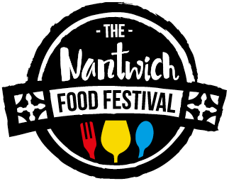

Emilia Schwab
Partenaire de longue date, cette grande architecte de renommée allemande constitue un pilier fondamental dans l'architecture de nos gâteaux. Sans cesse à la poursuite de la modernité et de la pureté des formes, elle offre une nouvelle perspective visuelle pour le monde de la pâtisserie. Visitez le site : Schwab Architectes
I Value Food
Car la valeur de nos produits est tout aussi importante que l'esthétique de nos pâtisseries ! Luttons contre le gaspillage. Visitez le site : I Value Food
Nantwich Food Festival
Retrouvez La Pâtisserie des Rêves au Nantwich Food Festival cette année 2017 ! Visitez le site : The Nantwich Food Festival